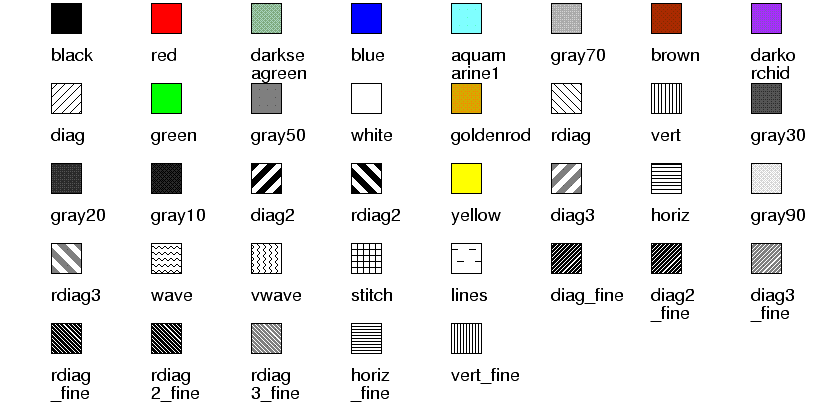

| PyChart |
| PyChart |
fill_style.T itself is an
abstract base class; actual drawing functions are provided by
its subclassess, which are described later.
This class supports the following attributes:
The background color.
The interval between successive stitch lines.
The style of the line.
fill_style.Diag.
The below picture shows the standard set of fill styles. They are named
like fill_style.name, where name are the labels shown
in the picture.

Just for your information, the "rdiag3" style shown in the picture can be created manually by the following code:
rdiag3 = fill_style.Rdiag(line_style=line_style.T(width=3, color=color.gray5), line_interval=6)
You can create your own fill style by subtyping fill_style.T.
It should provide the following public method:
| self, can, x1, y1, x2, y2) |
Just for your information, below is how the Rdiag class is implemented.
class Rdiag(fill_style.T): """Fills the region with diagonal lines, but tilted in the opposite direction from fill_style.Diag.""" def draw(self, can, x1, y1, x2, y2): line_width = self.line_style.width interval = self.line_interval * 1.414 x1 -= line_width y1 -= line_width x2 += line_width y2 += line_width len = max(y2 - y1, x2 - x1) while curx in range(x1, x2 + len, interval): can.line(self.line_style, curx, y1, curx-len, y1+len)
| PyChart |